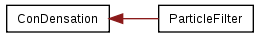
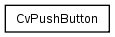
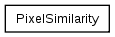
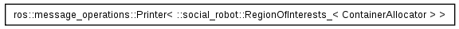
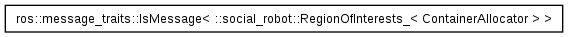
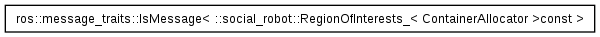
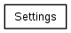
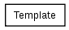

Main Page
Related Pages
Namespaces
Data Structures
Files
Data Structures
Data Structure Index
Class Hierarchy
Data Fields
Graphical Class Hierarchy
Go to the textual class hierarchy








Generated on Sat Nov 24 09:37:46 2012 for Social Robot by
1.6.3


 1.6.3
1.6.3